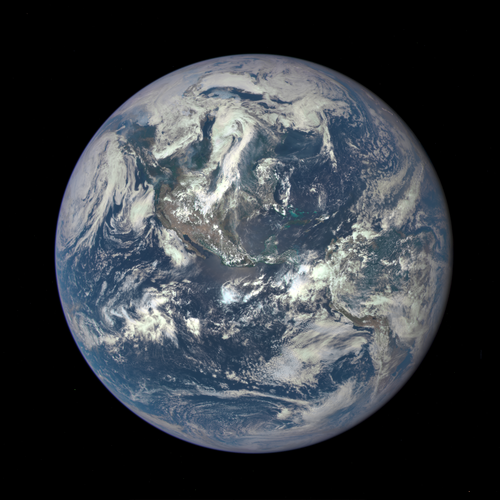

The Solar System
Is the Earth Unique?
In this article we will discuss the if Earth, as a habital planet is unique, and what may or may not make it unique.
Earth is One Special Planet
It has liquid water, plate tectonics, and an atmosphere that shelters it from the worst of the sun's rays. But many scientists agree our planet's most special feature might just be us.
Though other bodies in our solar system, such as Saturn's moon Titan, seem like they could have once been hospitable to some form of life, and scientists still have hope of eventually digging up microbes beneath the surface of Mars, Earth is still the only world known to support life.
The fact that Earth hosts not just life, but intelligent life, makes it doubly unique. And the planet's intelligent life (humanity) has even developed rockets that enable travel beyond the planet, said Gregory Laughlin, astrophysicist and planet hunter at the University of California, Santa Cruz.
Water:
To enable life, this most special of attributes, planet Earth has a number of ideal features. It is unique among planets in our solar system for having water in its liquid form at the surface, in an amount conducive to life evolving.
"The most impressive attribute of the Earth is the existence and amount of liquid water on its surface," said Geoffrey Marcy, an astronomer at the University of California, Berkeley who has helped discover dozens of extrasolar planets. No one knows why Earth has the exact amount of water it does, which is relatively small considering that water molecules outnumber silicate molecules in the galaxy, he said.
Goldilocks:
Earth's water is also special in that it has remained liquid for so long. How has Earth been able to hold on to its oceans while those on other planets freeze or fry?
Our planet's Goldilocks-like "just right" location in the solar system has helped, as has its system of plate tectonics the slip-sliding movements of Earth's crust that are thought to have created the planet's towering mountain ranges and plummeting ocean depths.
Another "just-right" aspect of Earth is its size: If it was much smaller, it wouldn't be able to hold on to our precious atmosphere, but much larger and it might be a gas giant too hot for life.
Friendly Moon:
Life on Earth may also owe a debt to our nearest celestial neighbor, the moon:
Earth's moon stabilizes our planet's rotation, preventing drastic movements of the poles that could cause massive changes in climate that some scientists think could have doomed any chance for budding life to form or evolve.
The moon also helpfully pulls the ocean's tides, which scientists suggest might have been the perfect place for early life to begin evolving to survive on land.
There are Others?!
Scientists have found nearly 2,000 alien planets since the first such world was confirmed orbiting a sunlike star in 1995. More than half of these discoveries were made by NASA's Kepler space telescope, which launched in 2009 on a mission to determine how common Earth-like planets are throughout the Milky Way galaxy.
Kepler's observations have shown that small, rocky worlds like our own are abundant in the galaxy, and some of them may be capable of hosting life as we know it.
To qualify as potentially life-friendly, a planet must be relatively small (and therefore rocky) and orbit in the "habitable zone" of its star, which is loosely defined as a location where water can exist in liquid form on a world's surface. When telescope technology improves, other factors will be considered as well, such as the planet's atmospheric composition and how active its parent star is.
While there still isn't an Earth 2.0, there are those that NASA considers to be our closest possibilities:
Gliese 667Cc
This exoplanet, which lies just 22 light-years from Earth, is at least 4.5 times as massive as Earth, and researchers aren't sure whether or not it's rocky. Gliese 667Cc completes one orbit around its host star in a mere 28 days, but that star is a red dwarf considerably cooler than the sun, so the exoplanet is thought to lie in the habitable zone.
However, Gliese 667Cc — which was discovered with the European Southern Observatory's 3.6-meter telescope in Chile — may orbit close enough in to be baked by flares from the red dwarf.
Kepler-22b
Kepler-22b lies 600 light-years away. It was the first Kepler planet found in the habitable zone of its parent star, but the world is considerably larger than Earth — about 2.4 times our planet's size. It's unclear if this "super-Earth" planet is rocky, liquid or gaseous. Its orbit is about 290 days long.
Kepler-69c
Kepler-69c, which is about 2,700 light-years away, is about 70 percent larger than Earth. So, once again, researchers are unsure about its composition.
The planet completes one orbit every 242 days, making its position within its solar system comparable to that of Venus within ours. However, Kepler-69c's host star is about 80 percent as luminous as the sun, so the planet appears to be in the habitable zone.
Kepler-62f
This planet is about 40 percent larger than Earth and orbits a star much cooler than our sun. Its 267-day orbit, however, puts Kepler-62f squarely within the habitable zone.
The Kepler-62 system lies about 1,200 light-years away.
Kepler-186f
This planet is at most 10 percent larger than Earth, and it also appears to reside in the habitable zone of its star, though on the zone's outer edge; Kepler-186f receives just one-third of the energy from its star that Earth gets from the sun.
Kepler-186f's parent star is a red dwarf, so the alien world is not a true Earth twin. The planet lies about 500 light-years from Earth.
Kepler-452b
This world, whose discovery was announced last month, is the most Earth-like planet found so far, NASA officials say. Its parent star is very similar to our sun, and the planet orbits in the habitable zone. At 1.6 times the size of Earth, Kepler-452b has a "better than even chance" of being rocky, its discoverers have said. Kepler-452b resides 1,400 light-years from Earth.